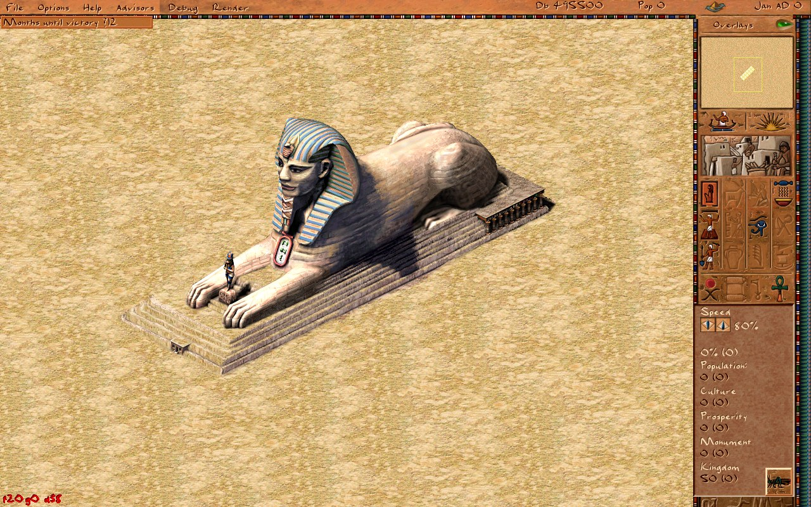
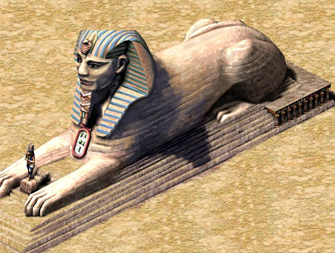

How to build a sphinx

A while back I wrote about the mastaba — the first monument you meet in the campaign, and the one that taught me how the original Pharaoh assembled a large structure out of small, independent, interchangeable parts. The sphinx is the next monument on that list, and it is a good illustration of why that "composite building" idea was worth all the trouble back in 1999. It is a single statue that is far too big and far too irregular to be one sprite, so under the hood it is not one building at all.
Three buildings pretending to be one statue
The sphinx you place is actually three separate buildings, each a 6×6 footprint, chained together the same way a fort links to its parade ground. The player never sees the seams: you drop one ghost, and the engine quietly creates the other two, links them with prev_part_building_id / next_part_building_id, and from then on they build, animate, and demolish as a unit. The three parts map onto the anatomy of the statue:
- Part A — the paws, the front of the sphinx with the outstretched forelegs.
- Part B — the body and head, the centre section carrying the pharaoh's face and the striped nemes headdress.
- Part C — the haunches, the rear of the body.
Laid out along the map, that is a 6×18 strip of tiles. When you place the main part (A), on_place_update_tiles spawns B and C at fixed offsets, tags each with a variant index (0 = paws, 1 = body, 2 = haunches), copies the current construction phase into them, and stitches the linked list together. Delete any one of them and the cascade in the cleanup pass takes the whole statue down with it. Exactly the mastaba trick, just with three body-shaped pieces instead of a run of identical walls.
Two textures per part — the diagonals
Here is the detail that tripped me up at first. Each part does not have one sprite per camera angle; it has two. The isometric city can be rotated in 90° steps, and a long horizontal statue looks meaningfully different depending on whether it is running "bottom-left to top-right" or "top-left to bottom-right" across the screen. So every part ships two frames — one for each diagonal — and the engine picks between them based on the camera:
const int orient_idx = (g_camera.orientation / 2) % 2;
const xstring key = anim_key_for(stage, part, orient_idx);
That collapses the four map rotations into the two diagonals the artwork actually needs. The animation keys follow a rigid little grammar — s<stage><part><diagonal> — so s6b1 is "stage 6, body, first diagonal" and s1a2 is "stage 1, paws, second diagonal". Three parts × two diagonals × six stages gives the full set of 36 sprites, each living in its own texture pack (PACK_SPHINX_1_A … PACK_SPHINX_6_C).
Six stages of carving
Like every monument, the sphinx is built in phases, and the artwork changes as it goes — you watch a rough block of stone slowly become a face. There are six visible stages, and the phase machine resolves down to them with a small clamp: the early scaffolding phases all read as stage 1, phases 2–5 map one-to-one onto carving stages 2–5, and everything from phase 6 onward (including the FINISHED sentinel, which is stored as -1) shows the completed stage 6.
int building_sphinx::art_stage() const {
const int p = runtime_data().phase; // int8_t: FINISHED == -1
if (p == MONUMENT_FINISHED || p >= 6) return 6;
if (p <= 1) return 1;
return p;
}
Because the three parts share the same phase value, they carve in lockstep — the head never gets ahead of the paws. Only the "main" part (the paws) actually runs the construction clock in update_day and requests labor during the carving stages; the other two just render whatever stage the main part has reached.
In gameplay terms those stages are a small production chain rather than a timer. Unlike a pyramid, the sphinx does not swallow stone or bricks — it is carved out of the rock itself — so what it actually asks for is labor and organized guilds:
- Stage 1 — scaffolding. Work Camps stage the site and Carpenters' Guilds raise wooden scaffolding around the block. The statue is still a rough, unpainted mass of stone at this point.
- Stages 2–5 — carving. Stonemasons work the figure over four passes, and this is where most of the shape appears: the paws stretch out, the lion's body takes form, and the pharaoh's face emerges under the nemes headdress. The masons are the bottleneck here — travel time from the guild to the site matters more than any raw material count.
- Stage 6 — finishing. The final coat: the blue-and-gold stripes on the headdress and the painted detail you can see on the completed statue.
The exact resource loads are still placeholders (timber for the scaffolding, then paint and clay for the finishing coat) pending the numbers from the original data files — every one of those lines is flagged TODO(orig-data), so it is honest about being a guess. The construction logic is real; the specific "how many loads of timber" is what is left to pin down. It is fireproof and damage-proof, so once it is up it stays up.

What the sphinx is for
A sphinx is not a working building — nobody is employed inside it and it produces nothing. Its job is to be a monument: a permanent boost to the city's prestige that counts toward your Kingdom rating and, in several campaigns, toward the mission victory conditions. Each monument carries a "weight" toward the rating; the sphinx's is a modest 1 (in src/scripts/city/monuments.js), reflecting that it is one of the lighter monuments — quick and cheap next to a full pyramid, but still a genuine landmark.
Its headline appearance is mission 18, Rostja — the Giza plateau — where the historical brief is to raise the great pyramid complex, the prince's pyramid, and the Sphinx (Khafra's likeness carved into the living rock). That is exactly why the sphinx is a good parallel project in the original game: because it feeds on labor and carving rather than the endless stone deliveries a pyramid demands, you can keep your stonemasons busy on the sphinx while the bulk of your porters and quarries pour stone into the main pyramid next door. Two monuments rising at once, sharing a workforce.
One thing the original enforced that Akhenaten does not yet: placement. In Pharaoh the sphinx has to sit on a suitable rock outcrop — you are literally carving the landscape — whereas for now the reimplementation lets you drop the 6×18 chain on any clear ground (the rock check is stubbed as TODO(sphinx-rock)). Orientation works, though: the building-rotation key lays the chain along either axis, and rotating the camera swaps each part to its other diagonal sprite so the statue always reads correctly.
Why bother splitting it up
The same lesson the mastaba taught applies here, only more so. A single giant sprite would be simpler to draw but impossible to build incrementally, impossible to rotate cleanly, and a nightmare to layer correctly against the little architect figure wandering across its paws for scale. Cut the statue into three ordinary buildings, give each two diagonals and six carving stages, let the shared isometric renderer sort them against everything else on the map, and the hard problems mostly evaporate. It really was a clever piece of engineering for a game that had to run in 64MB of RAM — and it is still a pleasure to watch the face slowly emerge from the stone.